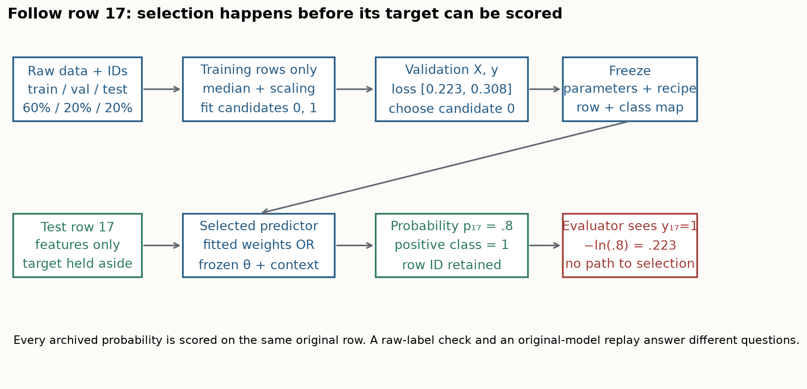

Baseline decision and evidence card
Freeze the procedure¶
Record original data bytes, row IDs, semantic positive class, preprocessing fit scope, candidate and epoch rules, checkpoint revision/hash, wrapper version, inference view/batch policy and seed roles. Test labels enter scoring after selection. A class-1 column is not always the adverse outcome: WDBC class 1 is benign.
Compute the actual quantities¶
- Binary loss: mean
-y*log(p)-(1-y)*log1p(-p), probabilities for class 1, float64 endpoint clipping. - Candidate selection: first validation minimum. Neural epoch choice here: last epoch at minimum validation loss.
- Corrected TabM-mini: only first R adapter; shared backbone biases; independent heads; mean member training loss and mean probability prediction.
- Dataset rank: mean seeds within dataset, rank those means, then average five dataset ranks.
rank(mean)differs frommean(rank). - Paired uncertainty: subtract aligned model/baseline errors; average seeds; bootstrap whole dataset means. Five datasets remain five blocks.
- Lifecycle model: preparation + batches × measured batch prediction. An illustration of 100+B versus 10+4B crosses at 30 batches.
Preserve model identity¶
The primary seven-arm panel uses fresh corrected TabM plus six archived arms. The original 105-result archive is immutable; an eight-arm diagnostic retains the incorrect historical mini variant under its original identity. Original-package replay independently verifies the five pretrained arms; archive-score reconstruction alone is weaker evidence.
TabPFN-3 compresses circular feature groups to row embeddings before ICL and retrieves class mass from context labels. Its class-count-independent decoder algebra does not remove the released 160-class ceiling or identify an unseen semantic label. TabICLv2 uses mixed-radix embedding views and hierarchical ICL for many-class tasks.
Interpret the intervention¶
Erase the most train-correlated feature with a training-median fallback, keeping the fitted models and all other test values fixed. Positive loss change means damage. Negative change is retained, not filtered. This is a feature-loss stress test, not causal attribution or retraining after deletion.
Source and reproduction boundary¶
TabPFN-3 §§2.1–2.4, C, E, TabICLv2 §3, A, J–K, TabM §3.3/5.1. Local five-table binary log loss does not reproduce TabArena AUROC/8-fold bagging, TALENT classification accuracy, full synthetic pretraining or relational benchmarks. See the full reproduction contract for commands and exact omitted work.

| Dataset | XGBoost | TabM-mini-v2 | TabPFN-v2 | TabICL-v1.1 | TabPFN-2.5-synthetic | TabPFN-3 | TabICLv2 |
|---|---|---|---|---|---|---|---|
| diabetes | 0.5336 ± 0.0044 | 0.5162 ± 0.0109 | 0.5256 ± 0.0028 | 0.5053 ± 0.0000 | 0.5469 ± 0.0092 | 0.5253 ± 0.0020 | 0.5192 ± 0.0000 |
| blood_transfusion | 0.4494 ± 0.0029 | 0.4356 ± 0.0008 | 0.4405 ± 0.0013 | 0.4540 ± 0.0000 | 0.4277 ± 0.0016 | 0.4351 ± 0.0018 | 0.4333 ± 0.0000 |
| kc1 | 0.3424 ± 0.0055 | 0.3134 ± 0.0007 | 0.3157 ± 0.0018 | 0.3375 ± 0.0000 | 0.3457 ± 0.0099 | 0.3466 ± 0.0080 | 0.3240 ± 0.0000 |
| phoneme | 0.2667 ± 0.0069 | 0.3623 ± 0.0111 | 0.2416 ± 0.0060 | 0.2700 ± 0.0000 | 0.2517 ± 0.0017 | 0.2382 ± 0.0035 | 0.2434 ± 0.0000 |
| breast_cancer | 0.1315 ± 0.0012 | 0.0758 ± 0.0117 | 0.1159 ± 0.0123 | 0.0849 ± 0.0000 | 0.1213 ± 0.0129 | 0.1376 ± 0.0028 | 0.1047 ± 0.0000 |
Test log loss, mean ± sample SD over three downstream seeds. Six archived arms plus fresh corrected TabM. Smaller is better; fixed split and restricted procedures.